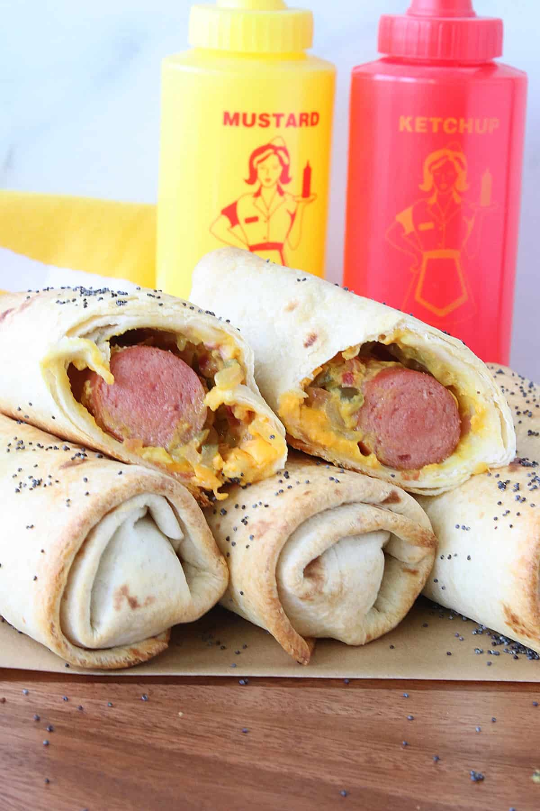

Burrito Dog

Description
Burrito Dogs are the missing puzzle piece in your life. The perfect pairing of two of the greatest foods on Earth: Hot Dogs and Burritos. Who knew that the Hot Dog was the perfect base for a burrito? The customizability and filling options are endless. Ketchup, musturd, saurkraut, onion, relish, salsa, the options are endless. Today, I'm gonna teach you how to make one of these beautiful little suckers. This recipe makes 4 servings
Ingredients
- 4 Burrito-size Tortillas
- 16 oz. of Cheese of Choice (I usually go with a Pepper Jack and Cheddar blend)
- 4 Hot Dogs
- Ketchup & Musturd
- Any other toppings you would like! (Saurkraut, dill relish, and diced red onions are a few of my favorites)
- Shred your cheese (if it's not pre-shredded)
- Top your tortilla with the shredded cheese
- Cook your Hot Dogs separately with method of choice
- Once they're done cooking, add the cooked Hot Dogs to the tortilla
- Add any other toppings you would like
- Roll up the burrito and toast it in a skillet until the cheese has melted
- Top with ketchup and musturd and enjoy!